-Personagens- |
|
Existem muitos personagens neste game. Abaixo está uma breve descrição de cada um. Você terá que interagir com todos eles pelo jogo. |
|
| 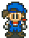Herói: O personagem no qual você controla. |
| 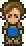Pai de Ann: O Pai de Ann é dono da Loja de Ferramentas na cidade. Sua esposa está enferma e se você se casar com Ann ele casará com a mãe de Nina. |
| 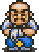Bartender: O Bartender é o bartender onde Eve mora e trabalha. Ele cuida de Eve. |
| 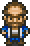Carpinteiro: Este é o principal Carpinteiro. Ele mora na montanha e aumentará sua casa quando você pedir a ele. |
| Aprendiz de Carpinteiro: Este é o assistente do Carpinteiro que ajuda ele a construir as ampliações da sua casa. Ele também mora na montanha. |
 Garoto da Igreja: Este é o menininho que fica do lado de fora da igreja que tem uma queda por Maria. Ele fica perto da igreja por que é onde Maria está. Durante o jogo sua queda vai para a neta da Cartomante. Garoto da Igreja: Este é o menininho que fica do lado de fora da igreja que tem uma queda por Maria. Ele fica perto da igreja por que é onde Maria está. Durante o jogo sua queda vai para a neta da Cartomante. |
| 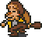Pai de Ellen: O Pai de Ellen é conhecido como bêbado. Ele mora no restaurante, mas toda noite enquanto ele está no bar bebendo, ele se recusa a ajudar em qualquer trabalho. |
| 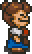Mãe de Ellen: Mãe de Ellen é a dona do Restaurante. Ela está sempre brigando com seu marido(O Bêbado) ou Pai de Ellen. |
| 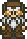Avô de Eve: Este é o avô de Eve que adora a montanha e passa o dia inteiro lá. É onde ele mora. |
| 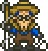Avô de Eve: O Pescador deixa voce usar sua vara durante o dia. Ele mora em uma tenda próximo a lagoa. |
| 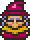Vidente: A Vidente sabe tudo sobre a vida. Vá a ela para conselhos de diferentes esposas disponíveis e um pouco de outras coisas relacionadas a agricultura. Quando sua esposa está tendo um bebê ela ajudará. |
| 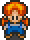Neta da Vidente: Esta é neta da Vidente que mora com sua avó. Ela tem um queda no garotinho que está sempre na igreja. |
| Camelo do Vento: Este é o personagen que como o Camelô só raramente aparece. Ele tenta trocar gato por lebre com você, embora as vezes seus acordors valema pena. |
| 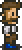Pai do Herói: Este é seu pai que volta para sua fazenda no fim do jogo. |
| 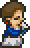Mãe do Herói: Está é sua mãe que só é encontrada na cena de abertura do jogo. |
| 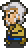Dono da Loja de Animais: Este é o Tio de Ellen que administra a Loja de Animais. Ele venderá para você animais e itens para animais. |
| 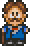Prefeito: Este é o Prefeito da Cidade. Ele mora em uma Mansão na esquina da cidade, e ele é também pai de Maria. |
| 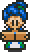Esposa do Prefeito: Esta é a Mãe de Maria e esposa o Prefeito. Ela mora com a familia na grande Mansão. |
| 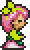Mãe de Nina: A Mãe de Nina é dona da Floricultura onde você irá para comprar algumas sementes para sua fazenda. Se você se casar com Ann ela irá casar com o Pai de Ann. |
| 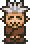Camelô: Bem quando você entra na Cidade você verá o Camelô. Ele está sempre tentando vender a você vários itens. Ele só está na cidade nos finais de semana. Você pode sempre vender itens para ele colocando eles na mesa perto dele. |
| 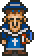Padre: Este é o Padre que administra a igreja. Ele casará você com qualquer esposas disponíveis que você decidir se casar. Todo o seu tempo ele passa na Igreja. |
| 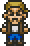Transportador: Este é o Chefe dos Transportadores que visita você toda noite. Ele troca itens por Gold/Ouro/Dinheiro. |
| 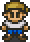Aprendiz de Transportador: Este é o aprendiz de transportador no qual você vai precisará da ajuda dele ao longo do jogo. |